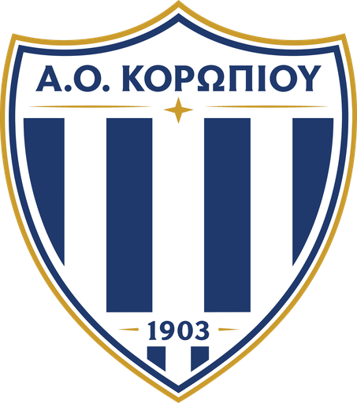

Ο σύλλογος
Μια Γειτονιά, Μία Οικογένεια. Ο Α.Ο. Κορωπίου σήμερα: η πρώτη ομάδα, η Ακαδημία και οι άνθρωποί του.
Ο σύλλογος σήμερα
Ο Α.Ο. Κορωπίου είναι ο σύλλογος της γειτονιάς μας. Η πρώτη ομάδα αγωνίζεται τη σεζόν 2026–27 στη Β΄ Κατηγορία της ΕΠΣ Ανατολικής Αττικής και φιλοξενεί τους αντιπάλους της στο γήπεδο «Αντώνης Πρίφτης».
Δίπλα στην πρώτη ομάδα, η Ακαδημία δέχεται αγόρια και κορίτσια από 4 έως 17 ετών. Προπονητές, γονείς, φίλαθλοι και χορηγοί κρατούν τον σύλλογο ζωντανό κάθε εβδομάδα.
Διοικητικό Συμβούλιο
Τα μέλη του Διοικητικού Συμβουλίου για τη σεζόν 2026–27.
- Θα ανακοινωθείΠρόεδρος
- Θα ανακοινωθείΑντιπρόεδρος
- Θα ανακοινωθείΓενικός Γραμματέας
- Θα ανακοινωθείΤαμίας
Το έμβλημα
Μπλε και λευκές ρίγες μέσα σε ασπίδα, με χρυσό περίγραμμα και ένα αστέρι. Τα ίδια γαλανόλευκα χρώματα φοράει σήμερα κάθε ομάδα του συλλόγου, από την πρώτη ομάδα ως τα μικρότερα τμήματα της Ακαδημίας.
